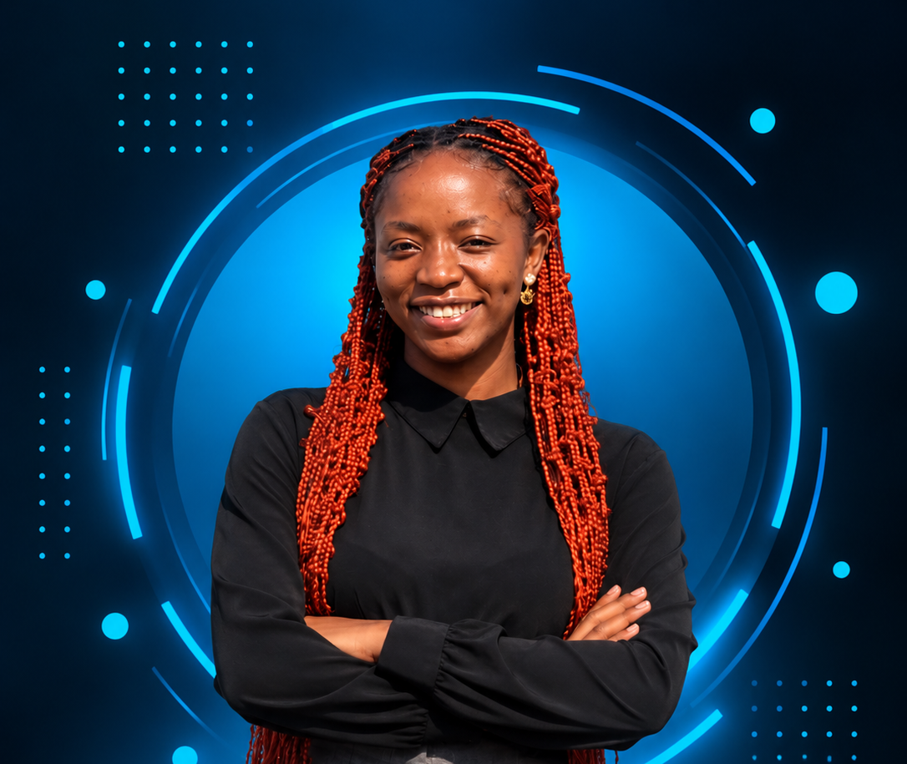

GET TO KNOW ME
About Me
I'm Rutendo Sengera, a third-year Computer Science student at the University of Zimbabwe, passionate about technology and creating innovative solutions. I enjoy exploring web and mobile development, artificial intelligence, databases and the Internet of Things. I love turning ideas into real-world projects that make a positive impact.

Build
Learn
Create
Ideas
Solutions
Impact
I believe in continuous learning, collaboration and using technology to make a meaningful difference.
Education
↗
BSc Honours in Computer Science
University of Zimbabwe
Bachelor of Science Honours Degree in Computer Science.
Currently in my third year.
Expected graduation: 2028.
Technical Focus
↗
Software development, AI, data and IoT
- Web Development
- Mobile Development
- Artificial Intelligence and Data
- Database Management
- Internet of Things
- Networking and IT Support
Leadership
↗
Leadership and community involvement
Technical Lead
Google Developers Group UZ
Director of Event Planning and Networking
Innovation Minds UZ
Partnerships Lead
MARI Makers Club
Career Goal
↗
Building impactful technology solutions
My goal is to become a skilled technology professional who develops innovative solutions to real-world problems. I am committed to continuously learning, improving my technical abilities and contributing to meaningful projects.
⚙ Skills & Technologies
View All Skills →🚀 My Journey
My journey in technology has taken me through academic projects, software development, hackathons and innovation programmes. I enjoy solving problems, exploring new technologies and collaborating with others to create meaningful solutions. Every experience continues to shape my growth technically and personally.
View My Projects →♥ Beyond Technology
Outside academics, I enjoy painting, reading personal development books and exploring creative ideas. These interests help me stay inspired, balanced and continuously learning.